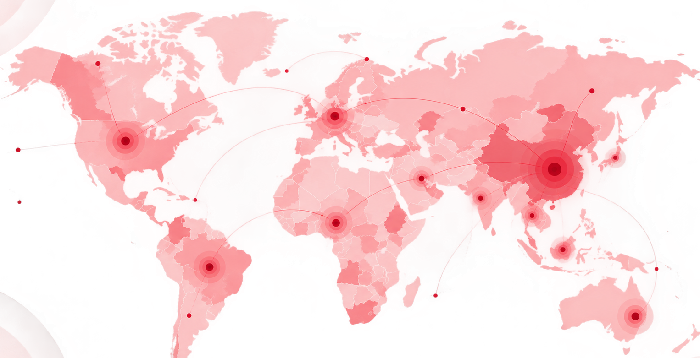

Where does risk concentrate?
Memvisualisasikan persebaran, hotspot, vulnerability, kelompok berisiko, dan indikator pemetaan COVID-19 dalam konteks global dan Indonesia.

Perkembangan Penyebaran Coronavirus 2020–2021
Video berikut digunakan sebagai pengantar untuk memahami perkembangan penyebaran coronavirus dan pola persebarannya.
Sumber: Video penyebaran coronavirus 2020–2021
Global overview
Klik marker untuk melihat konteks epidemiologi dan preparedness.
Indonesia focus
Persebaran COVID-19 di Dunia & Indonesia
SARS-CoV-2 menyebar secara global dan berdampak pada lebih dari 200 negara. Persebaran kasus tidak berlangsung secara merata, sehingga pemetaan geografis penting untuk memahami pola epidemiologi dan kebutuhan kesiapsiagaan setiap wilayah.
Europe
>126MKasus kumulatif pada data awal 2022.
Americas
>124MBeban kasus kumulatif tinggi pada periode data yang dirujuk.
Asia
~49MPopulasi besar dan mobilitas regional menjadi konteks penting.
Africa
~7.9MAkses dan kapasitas layanan menjadi komponen vulnerability.
Indonesia
Indonesia mengumumkan kasus COVID-19 pertama secara resmi pada 2 Maret 2020. Persebaran kasus tidak merata dan cenderung terkonsentrasi pada wilayah dengan kepadatan penduduk dan mobilitas yang tinggi.
Adanya beban kasus secara konsisten banyak ditemukan di DKI Jakarta, Jawa Barat, Jawa Timur, Jawa Tengah, dan Sulawesi Selatan.
Tercatat terdapat 180 kabupaten/kota yang berada dalam zona merah pada periode tersebut.
Wilayah Terdampak & Pola Spasial
Analisis spasial digunakan untuk mengetahui apakah kasus atau risiko penyakit tersebar secara acak atau membentuk pola tertentu. Pemetaan membantu mengidentifikasi hotspot, wilayah rentan, dan hubungan antara wilayah yang saling berdekatan.
Zonasi Risiko
Zonasi risiko menggunakan indikator epidemiologi dan kesehatan masyarakat untuk menggambarkan tingkat risiko suatu wilayah.
Vulnerability Index
Indeks kerentanan menggabungkan faktor epidemiologi dengan kondisi sosial, ekonomi, demografi, higiene, kapasitas layanan kesehatan, dan mobilitas.
Spillover Effect
Wilayah yang berdekatan dapat memiliki keterkaitan melalui mobilitas penduduk, migrasi, dan pekerja komuter.
Autokorelasi spasial positif
Nilai Moran’s I sebesar 0,8820 menunjukkan adanya autokorelasi spasial positif yang kuat pada studi yang dirujuk.
Temuan tersebut dikaitkan dengan pengaruh wilayah sekitar melalui mobilitas, migrasi, dan komuter.
Perbedaan kerentanan antarwilayah
Indeks terstandarisasi menunjukkan adanya variasi tingkat kerentanan antar kabupaten/kota. Wilayah dengan vulnerability tinggi banyak ditemukan di Pulau Jawa dan Sumatra bagian selatan.
Fenomena Mismatch
Adanya mismatch antara risiko epidemiologi dan kerentanan sosial ekonomi pada sekitar 61% wilayah.
Terdapat 31 kabupaten/kota yang memiliki risiko epidemiologi rendah tetapi tingkat vulnerability tinggi.
Perubahan Kasus di Provinsi Jambi
Kami juga memberikan contoh perubahan persentase kasus COVID-19 di Provinsi Jambi selama periode 2020–2022.
Wilayah yang disebutkan paling terdampak adalah Kota Jambi, Kota Sungai Penuh, dan Batanghari.
Kelompok Berisiko Tinggi
Pemetaan epidemiologi tidak hanya melihat lokasi kasus, tetapi juga karakteristik populasi yang memiliki kerentanan lebih tinggi terhadap dampak penyakit.
Pasien dengan Komorbid
Penyakit penyerta seperti gangguan paru, penyakit jantung, dan diabetes menjadi faktor penting dalam kerentanan terhadap penyakit berat.
Lansia
Lansia, terutama yang memiliki komorbiditas, merupakan kelompok yang perlu mendapat perhatian dalam skrining dan pemantauan.
- Risiko penyakit berat lebih perlu diperhatikan.
- Skrining dapat diprioritaskan sesuai kondisi dan kebijakan.
Ibu Hamil & Balita
Kelompok ini menjadi perhatian karena pembatasan sosial selama pandemi dapat memengaruhi akses terhadap pemantauan kesehatan dan pemenuhan kebutuhan gizi.
Migran & Komuter
Mobilitas tinggi meningkatkan keterhubungan antarwilayah dan perlu dipertimbangkan dalam pemetaan serta surveillance.
Data dan Indikator Pemetaan
Jumlah kasus saja tidak cukup untuk menggambarkan tingkat risiko suatu wilayah. Pemetaan multidimensional membutuhkan indikator epidemiologi, sosial ekonomi, demografi, higiene, kapasitas layanan, dan mobilitas.
| Dimensi | Indikator | Kegunaan dalam Pemetaan |
|---|---|---|
| Epidemiologi | Tren kasus aktif, kematian, dan indikator epidemiologi lainnya | Menggambarkan pola dan perubahan beban penyakit. |
| Surveilans Kesehatan | Testing dan positivity rate | Menilai aktivitas deteksi dan gambaran penularan. |
| Layanan Kesehatan | Tempat tidur isolasi pada rumah sakit rujukan | Menggambarkan kapasitas respons layanan kesehatan. |
| Sosial Ekonomi | Persentase penduduk miskin; penduduk usia 15+ yang tidak tamat SD | Menggambarkan kondisi sosial yang dapat memengaruhi vulnerability. |
| Demografi | Kepadatan penduduk/km²; proporsi lansia 60+ | Mengidentifikasi kondisi populasi yang dapat memengaruhi risiko. |
| Higiene & Perumahan | Luas lantai <7,5 m²/kapita; sanitasi; air minum aman; fasilitas cuci tangan | Menggambarkan kondisi lingkungan dan higiene. |
| Kapasitas Kesehatan | Tidak memiliki jaminan kesehatan; rasio tempat tidur; rasio dokter dan perawat | Menilai kemampuan wilayah dalam memberikan pelayanan. |
| Epidemiologi Tambahan | Morbiditas, perokok aktif, CFR | Melengkapi gambaran kerentanan epidemiologis. |
| Mobilitas | Proporsi pekerja komuter dan tingkat migrasi masuk | Menggambarkan konektivitas dan kemungkinan hubungan antarwilayah. |
Prinsip utama pemetaan
Jumlah kasus saja tidak cukup untuk menggambarkan risiko. Suatu wilayah dengan kasus rendah dapat tetap memiliki vulnerability tinggi apabila memiliki keterbatasan sosial, ekonomi, akses layanan, atau kapasitas kesehatan.